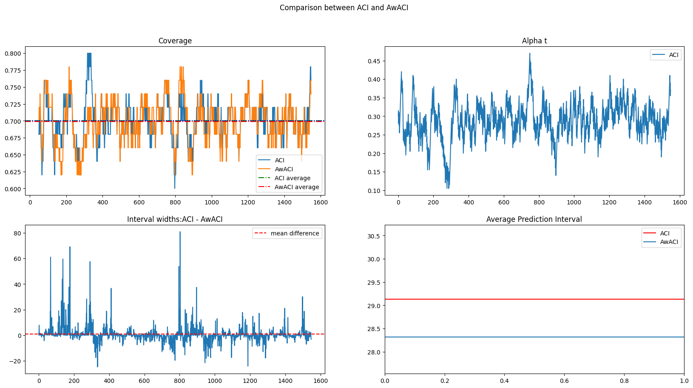

I continued researched alongside Dr. Henry Reeve on an area of statistics called conformal prediction. We tackled a specific branch of conformal prediction popularised by the paper arXiv:2106.00170 for uncertainty quantification on black-box time series models.
The following image demonstrates what the technique does:
Here we are comparing two different adaptive conformal prediction methods on stock data. We are most intrested in the coverage and the average prediction widths. Check out more images in the gallery.
I developed a variety of adaptations to the ACI method to improve its performance on distributions with certain characteristics. My favourite being a technique I named HACI where you use the observed volatility as a covariate for your interval prediction. This improved performance particularly on stock returns datasets.
Check out the repositoryDuring my internship at Projective Group I was tasked with creating a demo for multi agent LLM frameworks. I was told to research current papers. Identify a use case within the financial services industry and then create a working demo. I decided that anti money laundering (AML) and know your customer (KYC) would be a good service to implement multi-agents. This is because the workflow requires target web search, reasoning and knowledge of guidelines. I created an Agent framework which allowed an agent to delegate research and reasoning tasks to other agents which has access to the web and other tools. Watch the video below to see the framework in action.
This is a personal research project and is not affiliated with anyone. I started this research as It has become apparent to me that chatbots are increasingly being used to recommend products. I personally often use chatbots to find restaurants or hotels. For this reason there will be demand for SEO within LLMs, what I am calling LLMEO.
I believe there are two possible ways this could be achieved. Firstly, a method to target the RAG module, this is the more researched area. You essentially insert hidden text onto your product website begging the LLM to rank your product higher. This method has a fatal flaw which requires that you get into the top-n results on the search engine. No easy feat if your product is bad. Hence the second method I see happening is a data poisoning route where you try and get some of your malicious text into the models training data. This is the area which I am researching.
My current research aims to answer the following questions: